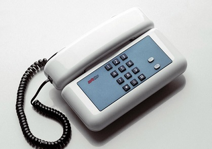

Sirio
The Original
Sirio phone is a piece in telecommunications history. Originally, it was a key-phone realized by SIP – Società Italiana per l’Esercizio Telefonico- around 1990-1991. The design first version was requested in 1987 to Giugiaro Design, which realized a telephone set with simple lines but at the same time elegant, that met the Company’s needs for production on a large scale. The name ‘Sirio’ was then extended to other SIP and Telecom Italia devices, which are equipped with new functions and designs.